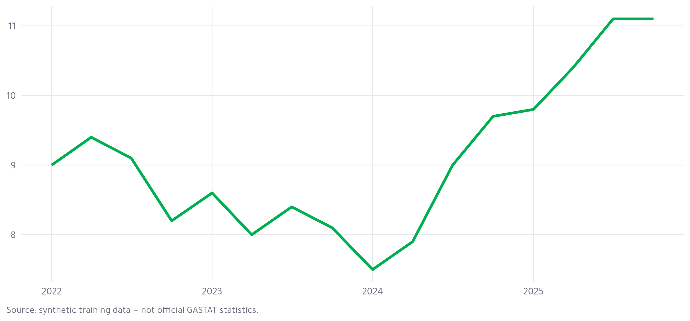

What Revealjs can do
Day 3 Block 2 · the reveal
2026-09-23
THE REVEAL · 5 MINUTES
Everything here is one .qmd file. Its source is shorter than you expect.
Pretty code
unemp |>
filter(region == "Jazan") |>
mutate(gap = rate - kingdom$rate) |>
ggplot(aes(date, gap)) +
geom_col(fill = "#00B050") +
theme_gastat()
Syntax highlighting, a copy button, and the brand’s own colours.
Code animation
ggplot(jazan, aes(date, rate))
Code animation
ggplot(jazan, aes(date, rate)) +
geom_line(colour = "#00B050", linewidth = 1.2) +
theme_gastat()
Line highlighting
unemp |>
filter(region != "Kingdom") |>
group_by(region) |>
summarise(change = last(rate) - first(rate)) |>
arrange(change)
Executable code
ggplot(jazan, aes(date, rate)) +
geom_line(colour = gastat_colours[["green"]], linewidth = 1.2) +
labs(x = NULL, y = NULL, caption = synthetic_note()) +
theme_gastat()

Equations
\hat{u}_r = \frac{\sum_{i \in r} w_i \cdot \mathbb{1}[\text{unemployed}_i]}
{\sum_{i \in r} w_i \cdot \mathbb{1}[\text{in labour force}_i]}
Weighted unemployment rate for region r. Written in LaTeX, rendered by MathJax.
Two columns
The claim
Jazan is the only region where unemployment rose over the series, while the Kingdom rate fell 2.2 points.
Incremental lists
- Exploratory work is for you
- Explanatory work is for them
- The bulletin has two charts because two is what a manager will look at
And . . . pauses anywhere, not just in a list.
Fragments
This fades in.
This is struck through.
This turns green.
And this arrives last.
A SOLID BACKGROUND
background-color on the slide heading. Use it once per deck, not once per slide.
Absolute position
Jazan, 2025Q4 — the highest of the 13 regions
Tabsets
| Region |
Rate (%) |
| Jazan |
11.1 |
| Al Jouf |
10.0 |
| Al Bahah |
9.9 |
| Northern Borders |
9.0 |
| Najran |
8.1 |
now |> arrange(desc(rate)) |> head(5)
Slide transitions
This one zoomed. none, fade, slide, convex, concave, zoom — set for the deck, overridden per slide.
The keyboard is the interface
s |
Speaker view — notes, timer, next slide |
b |
Chalkboard — draw on the slide |
c |
Notes canvas |
g |
Jump to slide |
o |
Overview of every slide |
r |
Scroll view — the deck becomes a page |
f |
Full screen |
THE POINT
You already have the analysis. The deck is a format, not a rewrite.